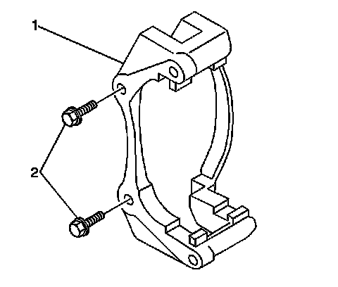

Front Brake Caliper Bracket Replacement (2500 Series)
Front Brake Caliper Bracket Replacement (2500 Series)
Caution: Refer to Brake Dust Caution.
Removal Procedure
1. Raise and support the vehicle. Refer to Lifting and Jacking the Vehicle.
2. Remove the tire and wheel assembly.
3. Remove the brake pads. Refer to Front Disc Brake Pads Replacement.
4. Remove the brake pad retaining springs.

5. Remove the brake caliper bracket mounting bolts (2).
6. Remove the brake caliper bracket (1).
Installation Procedure
1. Install the brake caliper bracket (1) to the steering knuckle.
2. Perform the following procedure before installing the brake caliper bracket bolts.
1. Remove all traces of the original adhesive patch.
2. Clean the threads of the bolt with denatured alcohol or equivalent and allow to dry.
3. Apply Threadlocker GM P/N 12345493 (Canadian P/N 10953488) to the threads of the bolt.
Notice: Refer to Fastener Notice.
3. Install the brake caliper bracket mounting bolts (2).
Tighten the bolts to 300 N.m (221 lb ft).
4. Install NEW brake pad retaining springs to the brake caliper bracket.
5. Install the brake pads. Refer to Front Disc Brake Pads.
6. Slowly apply pressure to the brake pedal until a firm pedal as been achieved.
7. Fill the master cylinder reservoir to the proper level with clean brake fluid, if necessary. Refer to Master Cylinder Reservoir Filling.
8. Install the tire and wheel assembly.